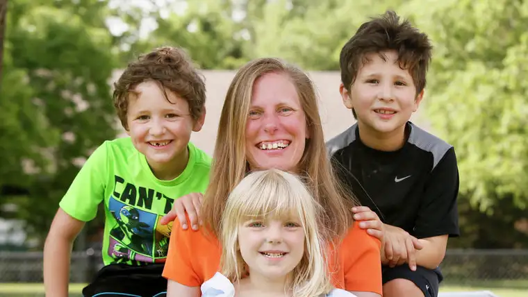

FARGO — Their courtship had only begun when Kevin and Bonnie Spies learned of their mutual dream of adopting disadvantaged boys.
“We were at a Steven Curtis Chapman concert,” Bonnie says, noting that during the event, participants were encouraged to sponsor children in need.
“We both had felt called to adopt troubled, teenage boys,” she says; her master’s degree in special education with an emphasis on learning disabilities and emotional disorders would help equip her, “and Kevin just felt called to it.”
Bonnie had already raised two daughters, and Kevin, a son — each from previous relationships. But, as Bonnie’s mother, Judy Joeb, put it, “She wasn’t done with mothering.”
Though several obstacles after marriage delayed their dream — paperwork interrupted by the happy birth of their daughter, Veronica, and a miscarriage — a couple years ago, the boys they once held only in their hearts became part of their everyday lives.
Despite being younger than they’d initially imagined, their adoptive sons, biological brothers Adrian, 7, and Tristan, 6, are as rough-and-tumble as most boys — even if their “forever family” says they have the softest souls.
“When you see the big picture of what (God) did and how he did it, you’re like, ‘Whoa! Good job, seriously!'” Bonnie says. “We really couldn’t have picked better kids. They’re ridiculously sweet … we’re lucky to have them as part of our lives.”
‘Doesn’t depend on blood’
Their story begins, as all adoptions do, with a loss — in this case, the death of a mother and absent father, but which has become, with an occasional frayed thread, a beautiful tapestry.
The multi-colored patterns include a positive foster-home experience, which prepared two little men for lives of imagination in a home filled with faith.
“They feed off each other,” Bonnie says. “One day it’s, ‘We’re going to the moon,’ the next, ‘We’re camping in the living room.'”
And right in the middle of that mix is one blond-haired little sister, Bonnie says, who had been praying for brothers before their arrival.
“We were thinking she’d want someone to do tea parties with. But, no,” she says of Veronica, 5. “They’ve been three peas in a pod. Her life has gotten 100 percent better since they came.”
Sometimes, the little mother in her comes out, as evidenced in a mid-interview interruption:
“Mom, Adrian got hurt and he’s a little bleeding on his knee.” Thankfully, it was nothing a little kiss couldn’t mend.
The masterpiece also includes adoptive grandparents, who join a biological grandma in another town, whom the Spies family visits regularly with other extended family.
“These boys very quickly became ours … they are little treasures,” says Grandma Judy Joeb, admitting it’s not always a flawless arrangement. “Veronica sometimes tells me, ‘Let’s go play in my room where there’s no stinky boys.’ She has her moments, too.”
But “love doesn’t depend on blood,” declares Joeb, who used to run a day care. “It’s easy to love other people’s children.”
Becoming a family
Kevin says his youngest sons, who are very affectionate, have nudged him to become more so, too. “I’m much more reserved, but they need that, it’s what’s in their DNA, and it’s been great from that standpoint.”
Without faith, he says, he’s not sure he would have been as open to the challenge. “Society says just worry about yourself. But because of our faith, this was put on our hearts.”
In challenging moments, he thinks about everything the boys have already been through and their resilience. “You realize, if they can do it, why can’t I? It’s very humbling.”
And at times his own resources fall short, Kevin says, he relies on the saints, like St. Michael the Archangel, whose battle-ready image comforts. “I show them, ‘See, he’s got a sword. He can protect us.’ Pretty much every night, we’ll pray the St. Michael prayer.”
Bonnie recounts some of the moments she’s needed to rely on her faith, like during the inevitable hard questions, which often emerge from the back seat of the van, including “Where is my tummy Mom?”
“I was the one who had to tell them she’d died,” she says, “(while we were in) a parking lot at the zoo.”
But other, happier moments also prove indelible, like the first time the boys called her Mom.
“We were at the dinner table, and Tristan said, ‘Can I have more ketchup, Mom?’ Bonnie recounts. “Then he stopped, and said, ‘Did you notice I called you Mom? Because you are Mom, that’s what they said, so I’m going to call you Mom now.'”
Another time, Adrian said, “Mom, I think I’m going to tell Grandma that I love you now.” To which Bonnie suggested, “That’s awesome, but don’t you think you should tell me first?”
“Yeah, Mom,” he replied. “I love you.”
Mothering through the challenges of adoption, she adds, have kept her near Jesus, particularly in Eucharistic Adoration — a practice of the family’s Catholic faith.
“You have to fill somehow, so you can keep giving while they figure out you’re a safe place to love,” she said.
Bonnie adds, “At (the boys’) baptism, Monsignor (Joseph) Goering said, ‘Children are saint-makers. They will get you on your knees. That’s the only way you’re going to get through it.’ He was right.”
[For the sake of having a repository for my newspaper columns and articles, I reprint them here, with permission, a week after their run date. The preceding ran in The Forum newspaper on June 23, 2018.]